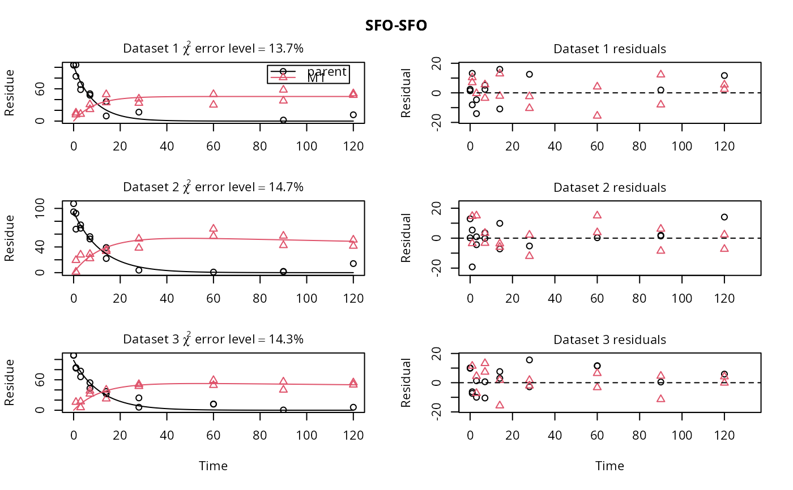

Add normally distributed errors to simulated kinetic degradation data
Source:R/add_err.R
add_err.RdNormally distributed errors are added to data predicted for a specific
degradation model using mkinpredict. The variance of the error
may depend on the predicted value and is specified as a standard deviation.
Usage
add_err(
prediction,
sdfunc,
secondary = c("M1", "M2"),
n = 10,
LOD = 0.1,
reps = 2,
digits = 1,
seed = NA
)Arguments
- prediction
A prediction from a kinetic model as produced by
mkinpredict.- sdfunc
A function taking the predicted value as its only argument and returning a standard deviation that should be used for generating the random error terms for this value.
- secondary
The names of state variables that should have an initial value of zero
- n
The number of datasets to be generated.
- LOD
The limit of detection (LOD). Values that are below the LOD after adding the random error will be set to NA.
- reps
The number of replicates to be generated within the datasets.
- digits
The number of digits to which the values will be rounded.
- seed
The seed used for the generation of random numbers. If NA, the seed is not set.
Value
A list of datasets compatible with mmkin, i.e. the
components of the list are datasets compatible with mkinfit.
References
Ranke J and Lehmann R (2015) To t-test or not to t-test, that is the question. XV Symposium on Pesticide Chemistry 2-4 September 2015, Piacenza, Italy https://jrwb.de/posters/piacenza_2015.pdf
Examples
# The kinetic model
m_SFO_SFO <- mkinmod(parent = mkinsub("SFO", "M1"),
M1 = mkinsub("SFO"), use_of_ff = "max")
#> Temporary DLL for differentials generated and loaded
# Generate a prediction for a specific set of parameters
sampling_times = c(0, 1, 3, 7, 14, 28, 60, 90, 120)
# This is the prediction used for the "Type 2 datasets" on the Piacenza poster
# from 2015
d_SFO_SFO <- mkinpredict(m_SFO_SFO,
c(k_parent = 0.1, f_parent_to_M1 = 0.5,
k_M1 = log(2)/1000),
c(parent = 100, M1 = 0),
sampling_times)
# Add an error term with a constant (independent of the value) standard deviation
# of 10, and generate three datasets
d_SFO_SFO_err <- add_err(d_SFO_SFO, function(x) 10, n = 3, seed = 123456789 )
# Name the datasets for nicer plotting
names(d_SFO_SFO_err) <- paste("Dataset", 1:3)
# Name the model in the list of models (with only one member in this case) for
# nicer plotting later on. Be quiet and use only one core not to offend CRAN
# checks
# \dontrun{
f_SFO_SFO <- mmkin(list("SFO-SFO" = m_SFO_SFO),
d_SFO_SFO_err, cores = 1,
quiet = TRUE)
plot(f_SFO_SFO)

# We would like to inspect the fit for dataset 3 more closely
# Using double brackets makes the returned object an mkinfit object
# instead of a list of mkinfit objects, so plot.mkinfit is used
plot(f_SFO_SFO[[3]], show_residuals = TRUE)
 # If we use single brackets, we should give two indices (model and dataset),
# and plot.mmkin is used
plot(f_SFO_SFO[1, 3])
# If we use single brackets, we should give two indices (model and dataset),
# and plot.mmkin is used
plot(f_SFO_SFO[1, 3])
 # }
# }